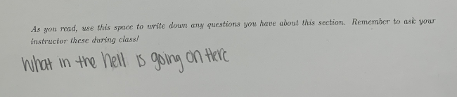

This was a random gush of words that I felt compelled to write, because the research team I am involved with (ACT UP Math) is analyzing and writing about how one university, Kappa, used the word rigor in their efforts to enact changes in their department. Below is not something that is peer-reviewed, but I think it's at a good place (as a stream of consciousness) to share with the world. At some point, I might reference this again when I look inside and analyze my own understandings of rigor and mathematics. Or when I inevitably research (gen)AI's impact on students' learning styles and frames.
Speaking from the position of someone who has never felt like mathematics was this subject that denied or gatekept me from feeling capable (read: smart), there’s a kind of cognitive dissonance when comparing my and others’ experiences with rigor in mathematics. On one hand, rigor is used as this high bar to clear in order to gain respect and clout in this field, generally speaking. With that comes this idea that we see in the data of justifying the (extreme) challenge of mathematics because of this badge of honor to have survived Rigor and/or this is just the way that it is given the status of the curriculum at Kappa as a university beyond the department of mathematics.
But on the other hand, I had thought (and probably still think) about rigor as the thing that made me trust in mathematics. But before we get to that, I think it's important to establish what trust means to me in a broader sense. In a socio-psychological look at myself, this trust in mathematics is informed by my immigrant status with moving to the United States at the age of 9; I felt like the only subject I could be immediately good at (and therefore trust in my ability to do) was mathematics because it had been all numbers and arithmetic at that point.
Fast forward through middle school, high school, and college, I've internalized this idea that mathematics was something to trust in that I will always be able to do. I say all this context because I think proof in mathematics has recontextualized my idea of trust. To me, proof courses were the first time I've ever been hit with this idea of “you have to be rigorous” in mathematics. Prior, I've always justified my calculations in mathematics with clear and laid out steps (never leaving a calculation step out), because that's just what (I thought) you had to do and I was never asked to do more of it. But now, proof isn't a calculation (per se). Now, I had to be asked to show more, to do more, to say more of why something is true. And I see this “ask” as rigor materialized in my experience, and I've internalized this “ask” as the subject wanting me to trust it in a new way. I know the fundamental theorem of calculus is true because I saw a proof of it in analysis and measure theory. I can trust it because there's been someone who put in the work in analysis to rigor-ize the fundamentals.
And I remember talking to my colleagues (other graduate students in mathematics) about this trust we have in mathematics. Someone from the past (after the development of Analysis) has put the work in proving the stuff we use like the Fundamental Theorem of calculus or something more esoteric like Lax Milgram. And when something doesn't sit right, we're inquisitive about it, why is that true? And so, for me, I already saw mathematics as something to trust from a young age, and rigor was that thing that made me deepen that trust.
When we talked about the example in Algebraic Geometry, I think I felt something in my gut; being averse to the move of publishing “less rigorous” proofs (i.e. more intuitive proofs or sketches of proofs), because it infringed on that idea of trust. I’d have a difficult time putting trust in a sketch of a proof in that's been publish (especially if only on the merit and clout of the author, people make mistakes and so again, rigor is that double, triple, quadruple check we have as a subject that lets us get around “celebrity” culture). ((Side note: we also brought up the disproportionate consequences of making changes to the norms of the field with regards to more popular mathematicians getting a pass while not extending the same leniency on junior researchers. This is another rabbit hole but I wanted to acknowledge it again!)) This is not meant to disparage the movement towards loosening the tight grip that polished perfect proofs have in mathematics literature. I welcome the idea of publishing sketches of proofs, mostly for the benefit of students to understand the technical stuff later. But, what I do hesitate is leaving the puzzle unsolved, sure the sketch takes away the fun of proving something for the first time since it spoils the “Aha!” moment. However, it does shake the foundations of my trust if the proof of a theorem I'm going to use is only ever a sketch and it's never made more rigorous (read: formal). There's still fun in actually going through the technical stuff to prove something formally beyond a sketch! Just like how it's still fun to solve a Rubik's cube or Sudoku puzzle even though I'm sure that it is solvable.
(In writing that part about formal versus sketch, I'm now beginning to examine what formality means to me as a mathematician. But that feels like even more words trying to jump out of the can, so I'll save writing that for another time.)
The last thing I want to share is the connection I'm drawing with this discussion of rigor and trust with the advent of artificial intelligence used in the classes by students (whether allowed or against whatever rules). There's been a lot of discourse on Twitter recently from English/Composition courses and instructors about how students keep using generative AI to write their essays. It made me think about how I personally would never use (generative) AI again (beyond taking a course in technology in mathematics classrooms and having an assignment that asked us to critique things like ChatGPT and Photomath in their then poor attempt at solving math problems). And I bring this up, because it ties into this idea of trust. I quite frankly don't trust these large language models in ever being able to replicate human verbal comprehension or composition. (Generative) Artificial Intelligence is a subject of probability, not certainty. It gives you a “this is the most likely arrangement of these words based on the prompt you give me” but it's never checking itself for certainty. Some people have lower thresholds of “yeah, that's close enough to my ideal of certainty” and use AI to circumvent some things that would take up their time. I just have a very, VERY high level of threshold which goes back to the idea that I trust mathematics, because I saw the proofs of the things I'm using. And I'm offloading a lot of that trust onto the peers who reviewed that work. AI doesn't have that. It's trusting itself in a cyclic manner of “well, this is what the most likely string of words in a statistical manner.” For the most part, the training set is ginormous that the most likely string of words actually form a coherent thought, but there will always be that epsilon-size error that could happen. So, to me, AI lacks rigor (read: certainty) and therefore, it's undeserving of my trust.

In my opinion, the purpose of mathematics in K-12 and general education in college is to instill a skillset or toolkit for problem-solving. One of those tools is to be able to identify when something isn't correct, and to be able to troubleshoot things. And, I think somewhere along the way, something got misconstrued. I can't pinpoint the storyline. So here's my attempt at crafting a compelling (though admittedly very rough) Shakespearean tragedy:
I and other graduate student instructors have been floating around this idea that problems on exams, quizzes, or in the workbook, there should be problems where the students are asked to read a made-up student's work on a problem that they’ve done on the homework, and ask them to establish the correctness of this answer. Despite their yes-or-no answer, students are then asked to answer a similarly worded question. Now, if the made-up work is correct (which you should problem correct ones so they know not to automatically answer “no, it's incorrect”), the student still has to do the computation and be in conversation with this other student’s work. Are they going to trust it blindly? Will they completely mimic it? Now, if the made-up work is incorrect, they have to identify that error and work through what made it faulty and then go ahead and remedy the error. Here, they are still having to make the choice whether to mimic the work if they can't ascertain the error.
This, to us, allows the students to interrogate the algorithms they've been using in class in a way that gets at the idea of problem-solving and troubleshooting. At the end of the day, the computations students do in algebra or precalculus are admittedly things a computer can do like Wolfram. But, yet, we know that there's a value to them doing it by hand. So, what is that value? How can we use new or old mathematical activity to explicitly demonstrate that value? How can we explicitly share this value to students so they're not left feeling that “this is just the way it is because someone said so?” I think this idea is solidifying by the day, especially in light of AI’s presence in students’ lives, and perhaps this is something to explore in the near future in transforming or reigniting mathematical activity. As much as I am a big opponent of AI use for its environmental detriments, it's an undeniable reality currently that students are interacting with these tools. So, I feel a big push to equip students with necessary toolkits and sight to increase their tolerance for believability. The students may not ever be as AI-averse as I am (needing 100% certainty that something is a trustworthy logical argument), but they should at least be able to see an answer given to them by AI, interrogate it, and notice if it's given them a faulty response.
I saw someone in the English Composition side of things talk about going back to pen-paper writing exams in class to circumvent or prevent students from using AI to write their exams. I find that such a fascinating response from this one individual, because it gets at a thing that (I feel) annoys students: academia refusing to move with the times. (Also, the gut reaction of what about those who can't write or afford those green/blue books, but I’ll ignore that here.) And so, in light of all of this culture and attitudes about mathematics in college (as checking off boxes and just pushing through the hurt, the challenge, the “rigor”) and in light of the forced acceleration of AI, I think mathematics as a subject to teach should not revert back like a stubborn conservative. Rather, we need to examine how we can move forward.
But haha, I'm not entirely sure where this stream of consciousness went. The flight landed so I have to end it here. I would love to hear your thoughts! You can email me at JohanBenedict[dot]Cristobal[atsign]lmu[dot]edu.
Uploaded 2025 May 8. This is a part of Johan's random writings, and you can find more here.